版本设计规划
独立完成 ColorOS 14 设计规划，从用户研究中提炼确定感、舒适感与品质感，推动系统风格升级。
ColorOS 15 带领各业务开展规划，ColorOS 16 将方法推广到部门。
项目背景
公司向高端市场转型，系统设计需要兼顾更广泛人群的审美与使用期待。
过去的版本规划多从头脑风暴和单点概念启动，对产品自身演进、竞争变化、用户反馈和技术趋势缺少系统审视。

设计洞察
疫情后，手机行业竞争进一步加剧。当时的版本规划判断是，用户换机周期已从约 1.5 年延长至 2 年以上，OPPO 在 4,000 元以上高端市场的产品竞争力仍需提升。ColorOS 14 因此要在「无边界与无负担」的设计积累上，让信息更易读、操作更明确、细节更有品质，并把这些要求落实到各团队的版本计划中。
版本规划借鉴腾讯及 OPPO 互联网业务 SP 战略规划中的「五看三定」，以「演进而非创造」为原则，从产品积累和竞争格局入手。
- 高端突破围绕高端市场的体验期待，明确系统体验优先改进的方向。
- 看自己 · 复盘产品积累汇总用户反馈，回看过去 12 个月的设计工作，识别需要延续的优势和待解决的问题。
- 看竞争 · 归纳竞争格局梳理主要竞品的特点、行业共性、友商优势和差异化打法。
前期用户研究与 ColorOS 13 界面走查揭示了三类日常体验问题。字体偏小、选项与控件边界不清，影响识别与操作判断。排版和留白缺少规律，增加查找负担。光影、材质与图形层次薄弱，影响对细节品质的感知。
下方组图汇总了当时的几项关键发现。用户偏好柔和且易于区分的色彩，也希望图标和文字尺寸更易辨认。布局需要用有规律的间距组织内容，并让关键信息更突出。
用户洞察与设计分析横滑浏览 · 点击看原图
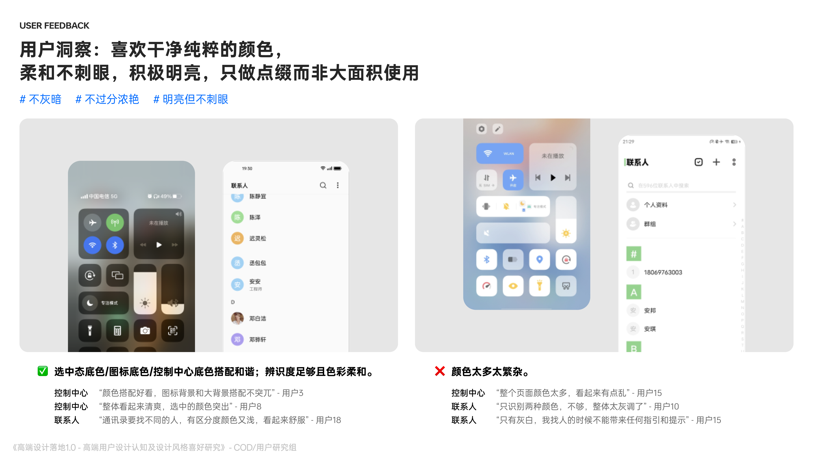
色彩偏好 · 控制中心开启状态与联系人头像色 
排版间距 · 相关信息之间的距离与列表节奏 
文字可读性 · 列表文字、索引与状态栏的字号对照 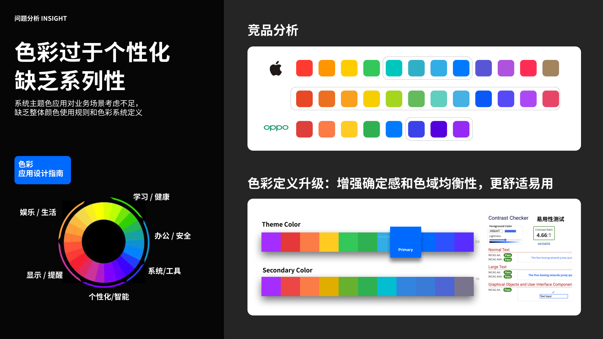
主题色体系 · 色域分布、功能用色与对比度示例 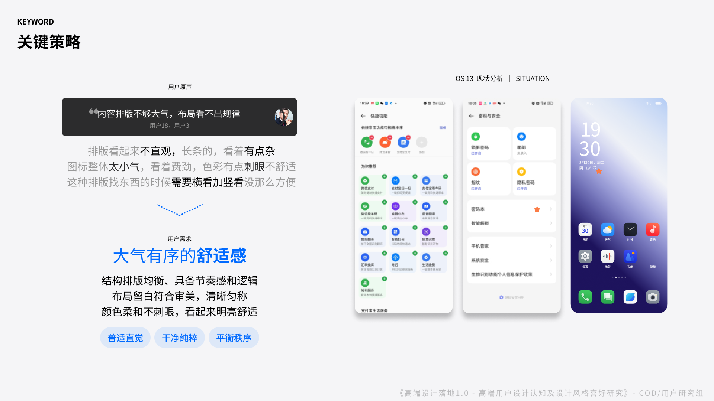
舒适感策略 · 排版秩序、留白与柔和用色 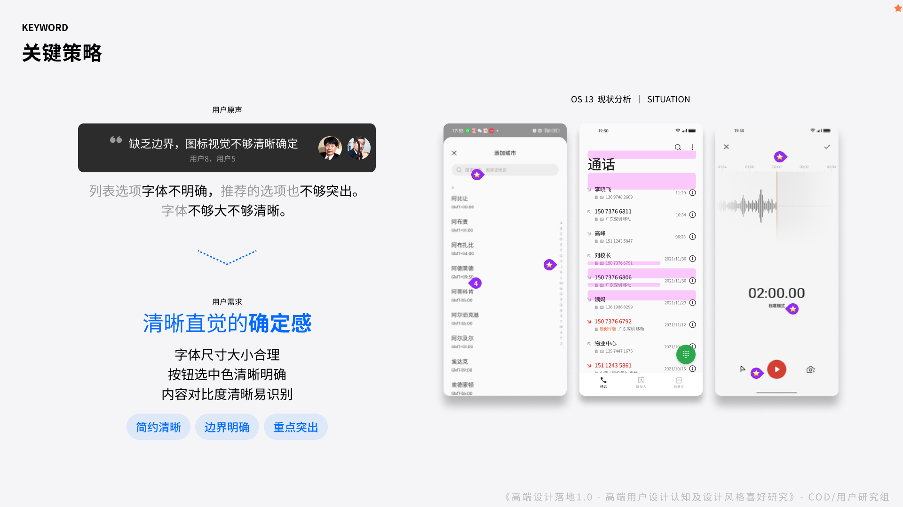
确定感策略 · 字号、选中态与内容对比度
设计目标
把清楚、舒适、有品质的共性期待，转成三项设计主张和对应的改造任务。
- 清晰直觉的确定感 强化文字对比、列表分隔和控件边界。由设计标准团队先推进系统字体、基础控件和权限弹窗。
- 大气有序的舒适感 用柔和的主题色、稳定的间距和清晰的信息分组改善阅读。由设计系统团队推进目录、卡片和控制中心等场景。
- 自然细腻的品质感 打磨材质层次、图标与高频场景的动效。由应用设计团队推进天气、邮件、联系人等应用场景。
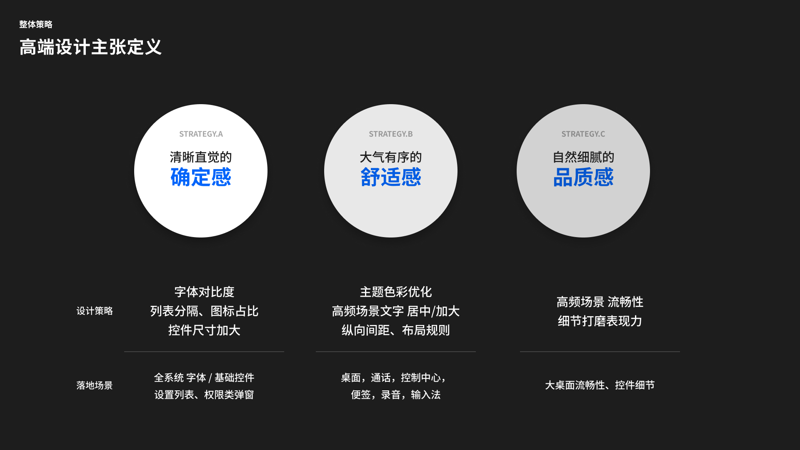
方案落地
改造方案把有关联的信息归到一起，再用字号、对比和间距拉开主次。这套方法用在锁屏与桌面的时间信息、通话中的联系人与操作，以及各应用的列表和表单里。
- 锁屏与桌面 以时间为视觉焦点，把日期、天气放在附近。
- 通话界面 把联系人信息集中在顶部，单独突出通话时长，底部统一组织操作按钮。
- 应用界面 用分隔线区分通话记录和消息条目，在设置里按用途组织入口，在闹钟里突出设定时间和重复状态。
布局优化方案选择场景，拖动滑杆对比
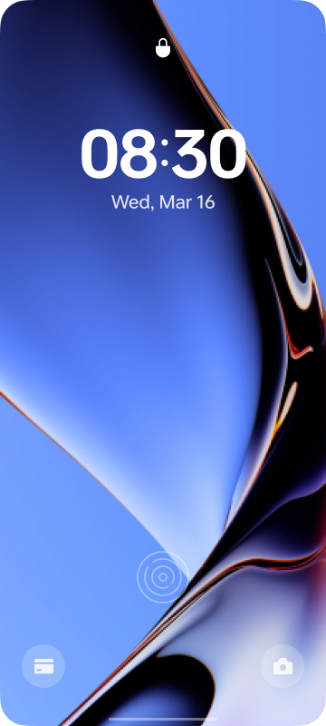
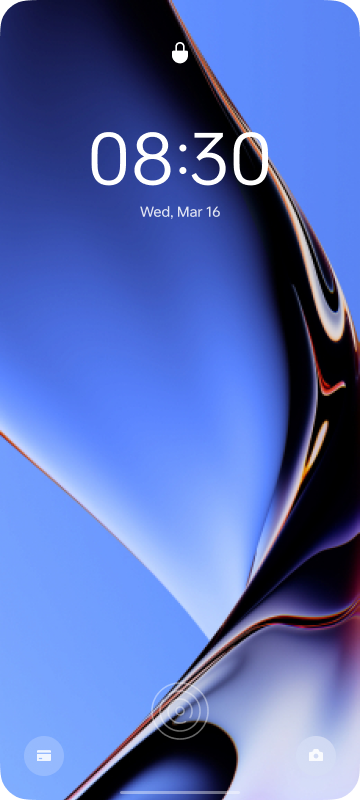
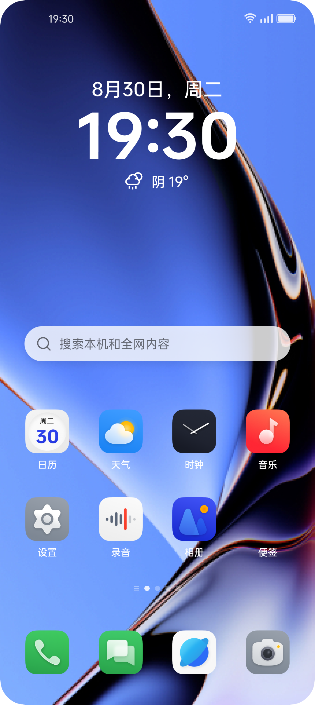
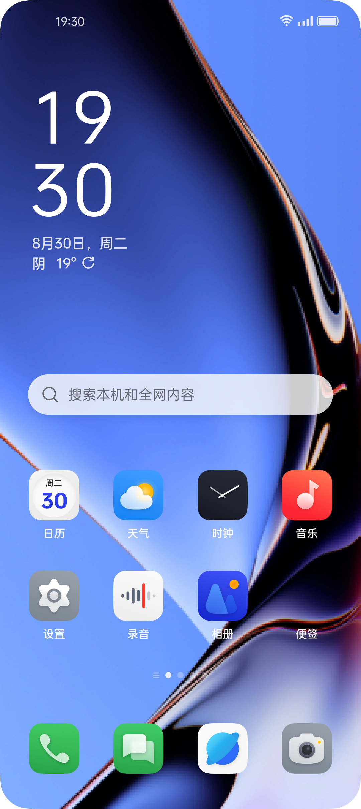
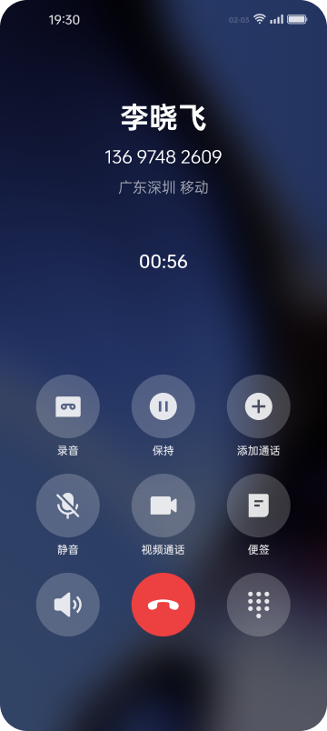
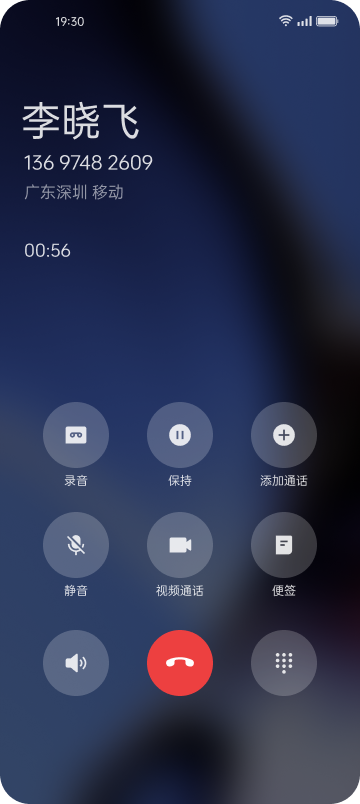
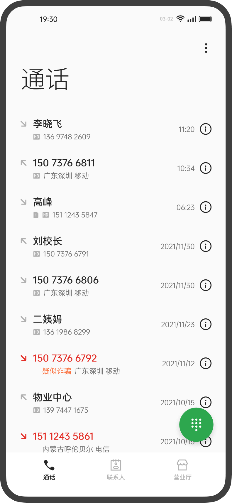
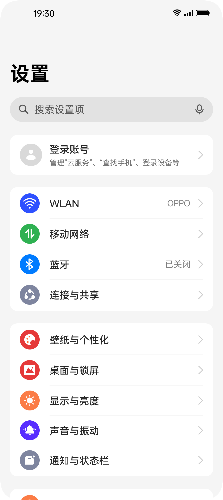
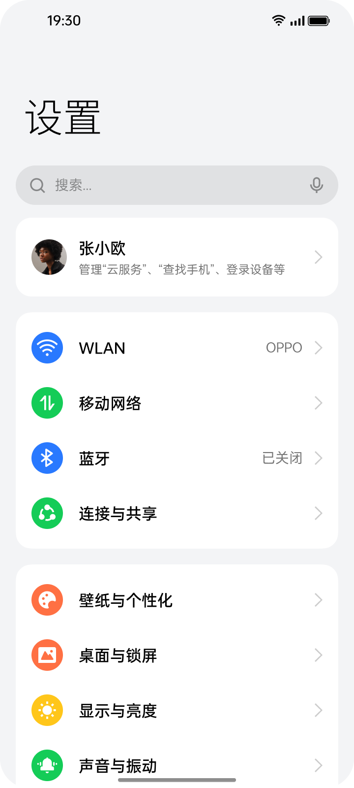
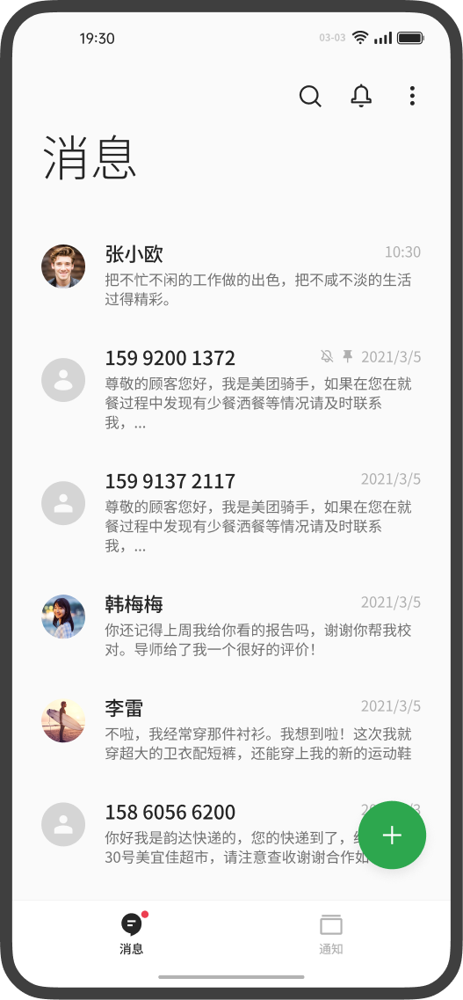
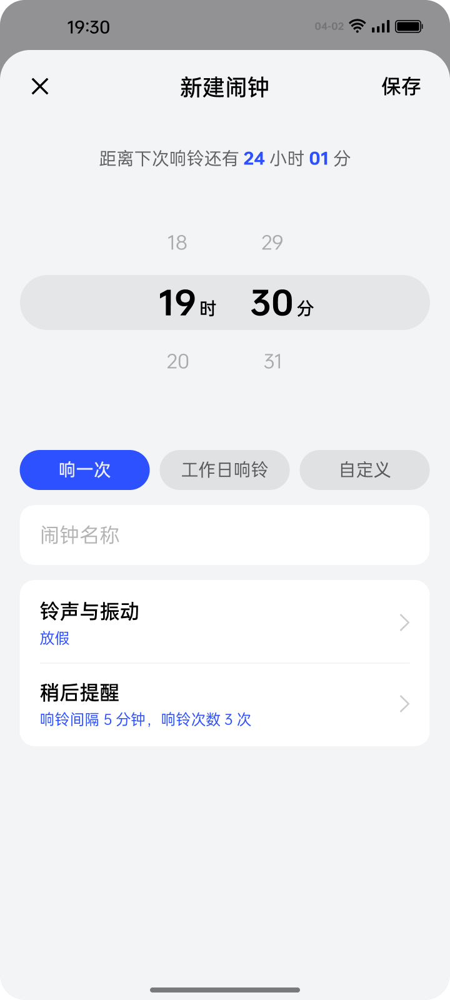
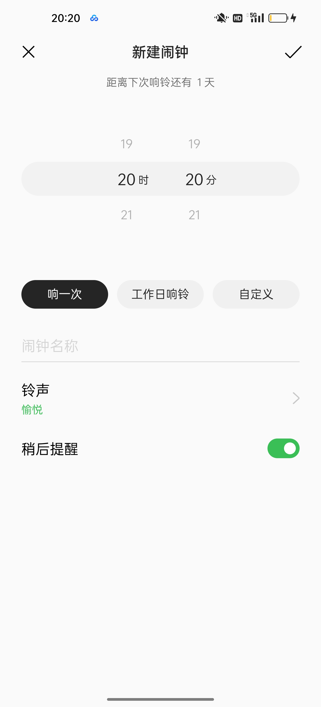
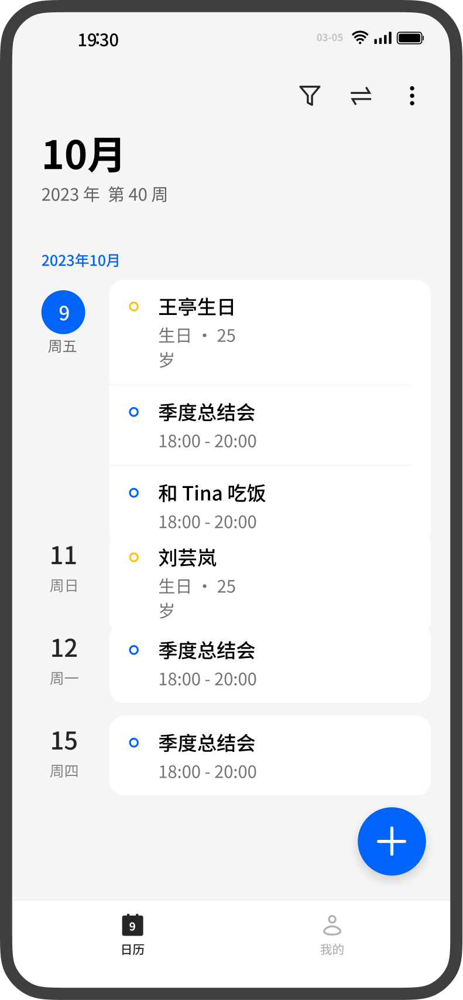
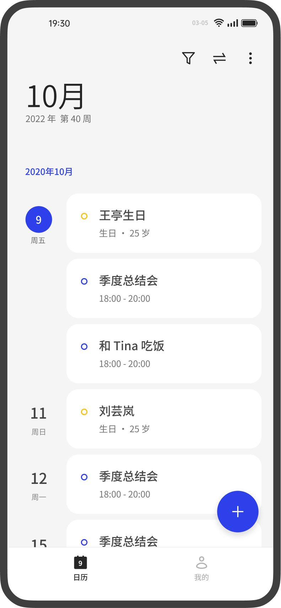
ColorOS 14 将控件、色彩与排版规则应用到多个系统场景。

方法沉淀
经过两个完整版本，系统级指标「版本设计满意度」同比显著提升 12 个百分点（12PP）。
- OS14版本实践 | 独立完成规划建立方向判断依据，明确改造重点并拆解团队任务。形成版本 UX 代表的端到端交付件，并在发布后复盘总结。
- OS15模板与培训 | 带领各业务开展规划提供模板并培训各业务 UX 代表，结合具体场景制定规划。集中打磨桌面动效和十大系统场景，与研发、测试在设计稿阶段对比重点入口的新旧方案。
- OS16部门推广 | 沉淀工作方法论将设计规划推广到部门范围，纳入各业务设计单元的工作。